Южноавстралийский угрехвостый сом

Если голову сома прикрепить к туловищу угря, то получится рыба, очень похожая на головастика-переростка и известная как южноавстралийский угрехвостый сом (лат. Cnidoglanis macrocephalus). Однако этот эндемик австралийского континента, обитающий в нескольких штатах, на острове Тасмания и на прибрежных коралловых рифах, далеко не такой безобидный, как лягушонок. Чтобы хоть как-то защищаться от своих главных врагов — пеликанов и бакланов,... Далее...
Секрет бабочек из рода Creatonotos
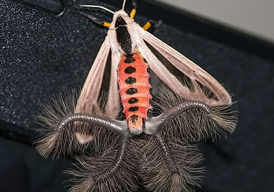Среди бабочек-медведиц из рода Creatonotos, обитающих в Юго-Восточной Азии, Африке и Австралии, встречаются весьма необычные экземпляры. Самые известные из десяти видов, входящих в род Creatonotos, это Creatonotos transiens с блеклыми, грязновато-белыми крыльями и оранжевыми в черную точечку брюшками и более драматически окрашенные Creatonotos gangis. Их светло-кремовые крылья будто тронуты легкой кистью древнего каллиграфа, украсившего их изящными черными... Далее...
Зоопарк Честера представил детенышей капского дамана
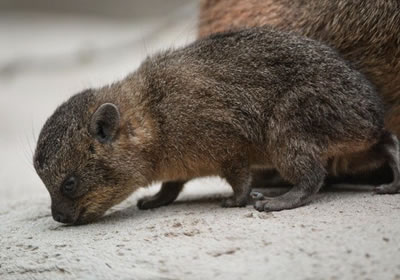Зоопарк Честера (Chester Zoo), что в английском графстве Чешир, представил общественности сразу четырех детенышей капского дамана, родившихся у них 20 июля. Первое потомство даманов в английском зоопарке появилось на свет в 2012 году и стало настоящей гордостью этого парка дикой природы. В отличие от многих других млекопитающих новорожденные даманы рождаются точными копиями своих родителей, но только меньшего размера. Их вес при... Далее...
Новые виды ночных лягушек, открытые в Индии
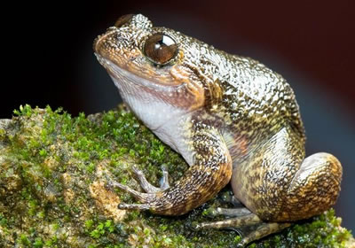Много лет провели индийские биологи, изучая влажные тропические леса Индии, проходя километры едва заметных тропок вдоль горных рек и болот, прислушиваясь к голосам ночных животных и стараясь выделить долгожданное «ква-ква». И наконец удача им улыбнулась: исследователям удалось найти и описать пятнадцать видов чрезвычайно скрытных лягушек, выползающих из своих укрытий только в ночное время и в сезон муссонов, живущих во влажной... Далее...
«Zoo Negara» — Национальный зоопарк Куала-Лумпура
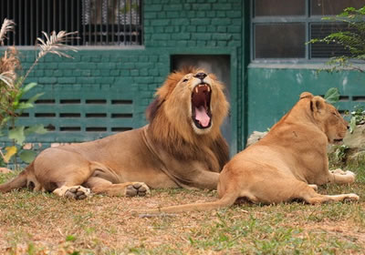Национальный зоопарк «Zoo Negara» уже давно стал родным домом для 450 видов различных животных. Здесь есть огромные жирафы, добродушные слоны, веселые кенгуру, неповоротливые бегемоты, грациозные пумы, благородные олени и многие другие уникальные животные. Некоторые из них живут в клетках, другие спокойно разгуливают по разным участкам джунглей, приставая к туристам и выпрашивая у них внимание и ласку. В зоопарке «Негара» хорошо... Далее...
Лев-отец знакомится со своими львятам
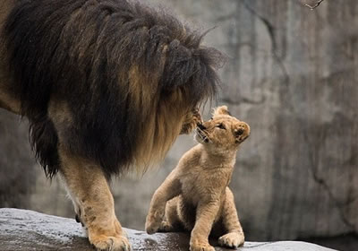Эти трогательные моменты, знакомства льва-отца со своим потомством, были запечатлены в американском зоопарке Орегона (Oregon Zoo) две недели назад. Пятилетний африканский лев по имени Завади Мунгу (Zawadi Mungu) наконец-то смог увидеть своих троих львят Камали, Залику и Ангелию (Kamali, Zalika and Angalia), которые появились на свет еще осенью. По словам смотрителя Лоры Вайнер (Laura Weiner), все сотрудники парка очень переживали, как пройдет это знакомство.... Далее...
Пакарана
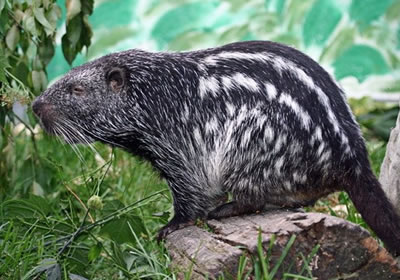Похожая на морскую свинку-переростка, пакарана (лат. Dinomys branickii) считается третьим по величине грызуном на планете. Размерами эти скрытные животные уступают только капибарам, бобрам и хохлатым дикобразам: взрослые пакараны вырастают до 80 см в длину и весят от 10 до 15 кг. Возможно, именно из-за крупных размеров и плотного телосложения эти грызуны получили название Dinomys, то есть «ужасная мышь». Давние предки пакаран ходили по планете... Далее...
В зоопарке Хьюстона родился азиатский слоненок
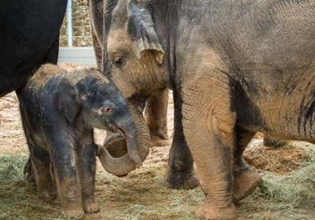В зоопарке Хьюстона (Houston Zoo) 7 февраля родился очередной слоненок. Все сотрудники и ветеринары зоопарка наконец-то смогли вдохнуть с облегчением: беременность, длившаяся почти два года, закончилась рождением прекрасного малыша. Счастливой матерью стала 24-летняя азиатская слониха по имени Шанти (Shanti). Шанти уже опытная мать, подарившая жизнь четырем слонятам, отцом которых является 48-летний слон Таи (Thai). Хотя со дня рождения прошло... Далее...
Беркут
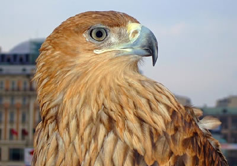Беркут (лат. Aquila chrysaetos) – самый крупный представитель рода орлов. Длина его тела может достигать 93 см при размахе крыльев до 2,4 м. Правда, такими размерами могут похвастаться только самки. Самцы значительно меньше: если вес самок варьирует от 3,8 кг до 6,8 кг, то самцы достигают массы тела всего 2,8-4,5 кг. В целом это очень красивые и сильные птицы. У них крепкий, типично орлиный клюв: сжатый по бокам и крючкообразно согнутый вниз. Крылья... Далее...
Черно-белая птичка Манакин Бокерманна
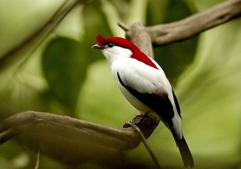Открытие этой маленькой черно-белой птички с красным «шлемом» на голове стало по-настоящему громким событием в мире орнитологии. Впервые манакин Бокерманна (лат. Antilophia bokermanni) был обнаружен в 1996 году, на небольшой территории площадью около одного квадратного километра, расположенной на Арарипском нагорье в бразильском штате Сеара. Привычные места обитания манакинов Бокерманна – прибрежные леса, воздух которых наполнен влагой... Далее...
Белый носорог
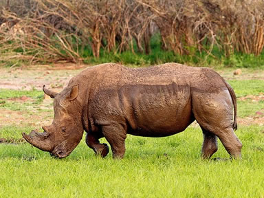Он огромен и опасен, у него мощное и мускулистое тело, острый передний рог и внушительные по размерам копыта. Белый носорог (лат. Ceratotherium simum) – самый крупный представитель носорожьего семейства, который считается вторым по величине сухопутным животным, уступая пальму первенства только великану-слону. Подумать только, масса старого самца может достигать 5 тонн (почти столько же, сколько и вес саванного слона), длина его тела обычно... Далее...
Самая опасная живность на планете
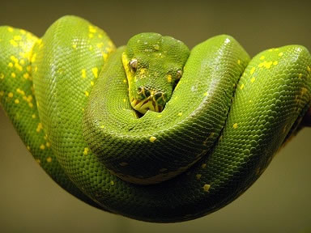Животный мир таинственен и опасен. Иногда даже на первый взгляд довольно милые животные могут на самом деле оказаться смертельно опасными. Москиты Казалось бы, обычный комарик, но от укусов таких насекомых в год умирает около 3 миллионов человек. Существует более 1000 разновидностей москитов и каждый из них представляет опасность для человека. Стоит отметить, что укус москита сам по себе не несет никакой опасности, просто немного... Далее...
 Добро пожаловать на проект "Самые опасные животные мира" здесь вы прочитаете информацию о самом животном, сможете узнать о том, как нужно себя вести, чтобы не угодить в зубы или когти хищника, не получить смертельный удар или ядовитый укус.
Добро пожаловать на проект "Самые опасные животные мира" здесь вы прочитаете информацию о самом животном, сможете узнать о том, как нужно себя вести, чтобы не угодить в зубы или когти хищника, не получить смертельный удар или ядовитый укус.